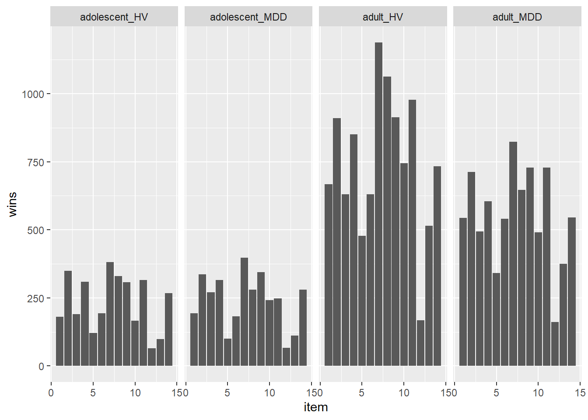
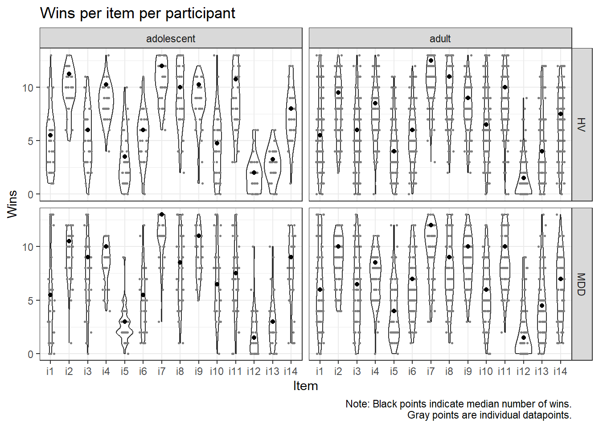
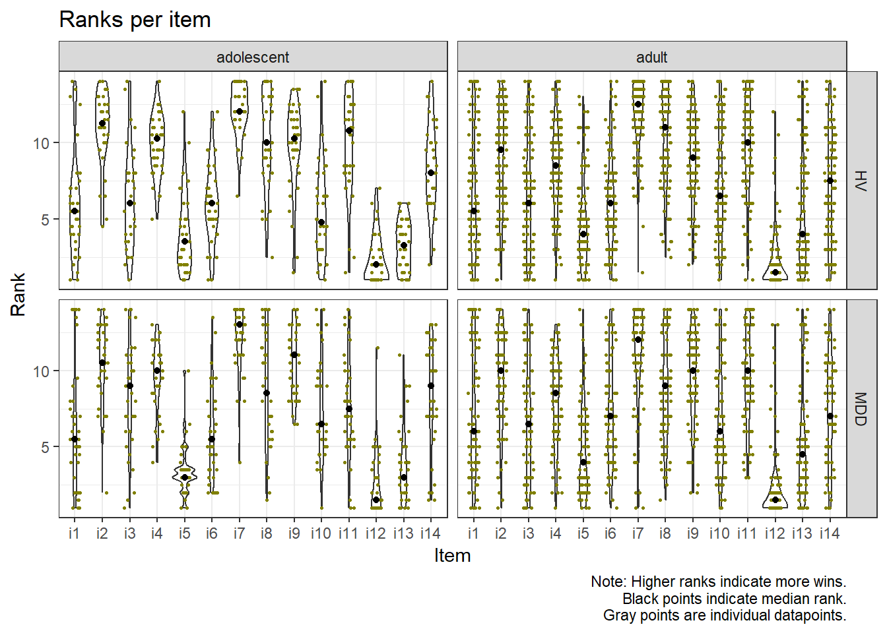
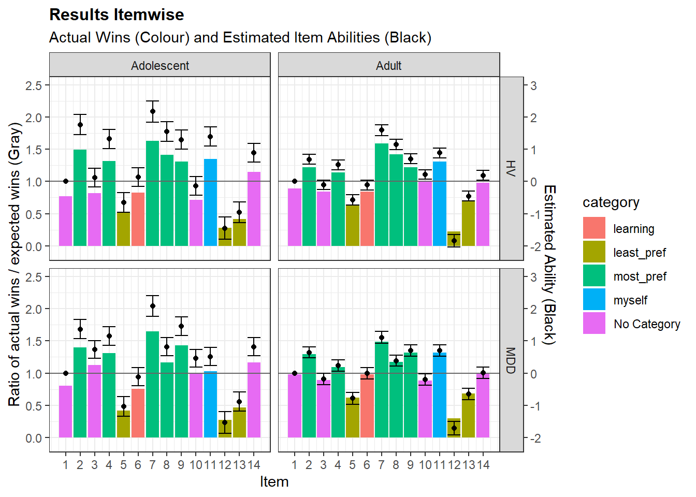
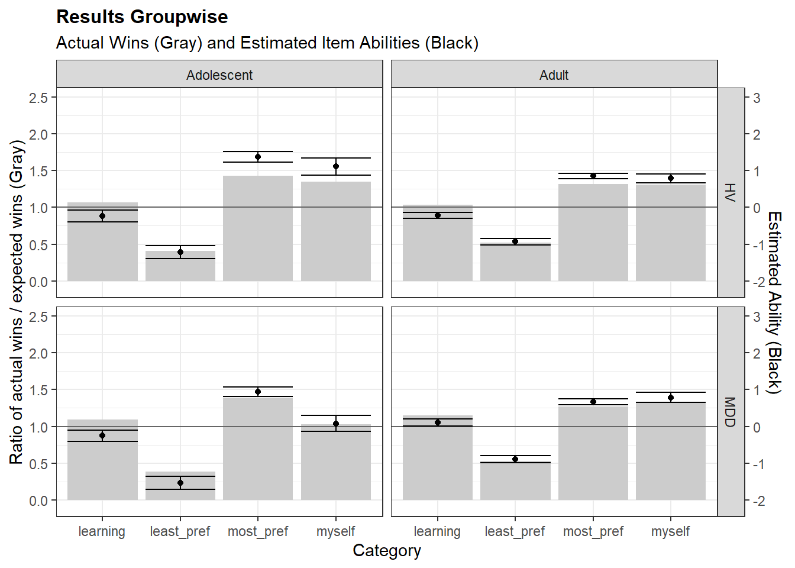

[1] "I never want to be sad again"
[2] "I feel that occasional sadness is important"
[3] "I enjoy feeling melancholy sometimes"
[4] "It is not always bad to feel low"
[5] "It is never good to feel low"
[6] "When I feel low, I can see things more clearly"
[7] "Feeling sad sometimes is part of normal life"
[8] "I have learnt a lot about myself by being happy"
[9] "I have learnt a lot about myself by being sad"
[10] "How one feels is not the most important thing"
[11] "I am always trying to be myself, even if this makes me feel low."
[12] "Feeling anger is always good"
[13] "Feeling anger is never good"
[14] "Anger can be important in life" Exploring Binary Decision Data on Emotion
Exploring Descriptives
First, load in the data, and have a look at the individual items:
Next, try to get an overview of the data. First, look at sample sizes.
# A tibble: 8 × 4
# Groups: status, group [4]
status group sex n
<fct> <chr> <chr> <int>
1 HV adolescent f 31
2 HV adolescent m 5
3 HV adult f 47
4 HV adult m 68
5 MDD adolescent f 34
6 MDD adolescent m 3
7 MDD adult f 39
8 MDD adult m 46Looks like adolescent boys are severely underrepresented in this sample. This means that gender-based effects will likely be highly unstable.
Next, generate plots for the raw wins and ranked wins in total and in each predictor category.



Item level Analysis
Model 1
Now, fit a series of Bradley-Terry Models to the data. First, fit an intercept-only model involving every item.
Then, list items according to their abilities:
ability se ability
i7 1.543311231 0.05412431 0.8239456
i8 0.886278104 0.05021532 0.7081215
i2 0.873588485 0.05016820 0.7054918
i9 0.853356320 0.05009510 0.7012707
i11 0.824419525 0.04999479 0.6951737
i4 0.590720989 0.04936326 0.6435306
i14 0.289207677 0.04900100 0.5718021
i10 0.069757257 0.04905169 0.5174322
i3 0.002412856 0.04912075 0.5006032
i1 0.000000000 0.00000000 0.5000000
i6 -0.048386252 0.04918968 0.4879058
i13 -0.616099347 0.05099506 0.3506691
i5 -0.697784507 0.05142188 0.3323036
i12 -1.689138369 0.06084468 0.1558892
description
i7 Feeling sad sometimes is part of normal life
i8 I have learnt a lot about myself by being happy
i2 I feel that occasional sadness is important
i9 I have learnt a lot about myself by being sad
i11 I am always trying to be myself, even if this makes me feel low.
i4 It is not always bad to feel low
i14 Anger can be important in life
i10 How one feels is not the most important thing
i3 I enjoy feeling melancholy sometimes
i1 I never want to be sad again
i6 When I feel low, I can see things more clearly
i13 Feeling anger is never good
i5 It is never good to feel low
i12 Feeling anger is always goodModel 2
Next, fit a model including depression status, sex and age as predictors. Again, show items ordered by ability.
Call:
BTm(outcome = cbind(win1, win2), player1 = item1, player2 = item2,
formula = ~item + item * status + item * group + item * sex,
id = "item", data = dat)
Coefficients: (3 not defined because of singularities)
Estimate Std. Error z value Pr(>|z|)
itemi2 1.61696 0.11897 13.591 < 2e-16 ***
itemi3 0.34726 0.11333 3.064 0.002184 **
itemi4 1.36000 0.11622 11.702 < 2e-16 ***
itemi5 -0.74483 0.12108 -6.152 7.67e-10 ***
itemi6 -0.02350 0.11405 -0.206 0.836731
itemi7 2.35830 0.12915 18.261 < 2e-16 ***
itemi8 1.57039 0.11736 13.381 < 2e-16 ***
itemi9 1.38273 0.11721 11.797 < 2e-16 ***
itemi10 0.24302 0.11340 2.143 0.032105 *
itemi11 1.10410 0.11504 9.598 < 2e-16 ***
itemi12 -1.52429 0.13779 -11.063 < 2e-16 ***
itemi13 -0.89686 0.12218 -7.340 2.13e-13 ***
itemi14 0.96259 0.11407 8.438 < 2e-16 ***
statusMDD NA NA NA NA
groupadult NA NA NA NA
sexm NA NA NA NA
itemi2:statusMDD -0.12956 0.10215 -1.268 0.204658
itemi3:statusMDD 0.11140 0.09999 1.114 0.265234
itemi4:statusMDD -0.25696 0.10052 -2.556 0.010578 *
itemi5:statusMDD -0.23808 0.10469 -2.274 0.022957 *
itemi6:statusMDD 0.02015 0.10001 0.201 0.840355
itemi7:statusMDD -0.41060 0.10978 -3.740 0.000184 ***
itemi8:statusMDD -0.76786 0.10230 -7.506 6.11e-14 ***
itemi9:statusMDD 0.02768 0.10214 0.271 0.786408
itemi10:statusMDD -0.15788 0.09973 -1.583 0.113404
itemi11:statusMDD -0.36359 0.10166 -3.576 0.000348 ***
itemi12:statusMDD 0.07340 0.12317 0.596 0.551227
itemi13:statusMDD -0.11443 0.10386 -1.102 0.270538
itemi14:statusMDD -0.16422 0.09988 -1.644 0.100137
itemi2:groupadult -0.86546 0.13094 -6.610 3.85e-11 ***
itemi3:groupadult -0.67378 0.12580 -5.356 8.51e-08 ***
itemi4:groupadult -0.82996 0.12797 -6.486 8.84e-11 ***
itemi5:groupadult 0.04037 0.13391 0.301 0.763054
itemi6:groupadult -0.14362 0.12613 -1.139 0.254857
itemi7:groupadult -0.61249 0.14168 -4.323 1.54e-05 ***
itemi8:groupadult -0.32948 0.12909 -2.552 0.010703 *
itemi9:groupadult -0.52756 0.12984 -4.063 4.84e-05 ***
itemi10:groupadult -0.20168 0.12558 -1.606 0.108282
itemi11:groupadult -0.17447 0.12736 -1.370 0.170723
itemi12:groupadult -0.27967 0.15260 -1.833 0.066855 .
itemi13:groupadult 0.20294 0.13434 1.511 0.130861
itemi14:groupadult -0.62077 0.12601 -4.926 8.38e-07 ***
itemi2:sexm -0.04318 0.11053 -0.391 0.696048
itemi3:sexm 0.23652 0.10900 2.170 0.030019 *
itemi4:sexm -0.04321 0.10901 -0.396 0.691813
itemi5:sexm 0.24001 0.11329 2.119 0.034121 *
itemi6:sexm 0.15815 0.10873 1.455 0.145797
itemi7:sexm -0.31128 0.11946 -2.606 0.009168 **
itemi8:sexm -0.14581 0.11167 -1.306 0.191621
itemi9:sexm -0.28260 0.11073 -2.552 0.010704 *
itemi10:sexm 0.11112 0.10842 1.025 0.305408
itemi11:sexm 0.06685 0.11086 0.603 0.546518
itemi12:sexm -0.02102 0.13510 -0.156 0.876346
itemi13:sexm 0.34872 0.11232 3.105 0.001904 **
itemi14:sexm -0.27823 0.10844 -2.566 0.010297 *
---
Signif. codes: 0 '***' 0.001 '**' 0.01 '*' 0.05 '.' 0.1 ' ' 1
(Dispersion parameter for binomial family taken to be 1)
Null deviance: 34440 on 24843 degrees of freedom
Residual deviance: 28065 on 24791 degrees of freedom
AIC: 28169
Number of Fisher Scoring iterations: 4 ability se ability
i7 2.35830492 0.1291474 0.9135921
i2 1.61696127 0.1189702 0.8343756
i8 1.57039309 0.1173556 0.8278396
i9 1.38273337 0.1172080 0.7994296
i4 1.36000018 0.1162164 0.7957597
i11 1.10409695 0.1150365 0.7510270
i14 0.96258543 0.1140717 0.7236392
i3 0.34725551 0.1133343 0.5859519
i10 0.24301781 0.1133953 0.5604572
i1 0.00000000 0.0000000 0.5000000
i6 -0.02350396 0.1140547 0.4941243
i5 -0.74482903 0.1210768 0.3219491
i13 -0.89686207 0.1221845 0.2896958
i12 -1.52428888 0.1377860 0.1788308
description
i7 Feeling sad sometimes is part of normal life
i2 I feel that occasional sadness is important
i8 I have learnt a lot about myself by being happy
i9 I have learnt a lot about myself by being sad
i4 It is not always bad to feel low
i11 I am always trying to be myself, even if this makes me feel low.
i14 Anger can be important in life
i3 I enjoy feeling melancholy sometimes
i10 How one feels is not the most important thing
i1 I never want to be sad again
i6 When I feel low, I can see things more clearly
i5 It is never good to feel low
i13 Feeling anger is never good
i12 Feeling anger is always goodAnalysis of Deviance Table
Response: cbind(win1, win2)
Model 1: ~item
Model 2: ~item + item * status + item * group + item * sex
Resid. Df Resid. Dev Df Deviance Pr(>Chi)
1 24830 28515
2 24791 28065 39 449.72 < 2.2e-16 ***
---
Signif. codes: 0 '***' 0.001 '**' 0.01 '*' 0.05 '.' 0.1 ' ' 1This model shows that all of age group diagnostic status and sex are significant predictors of emotion preferences, and significantly improved fit. Next, test if inclusion of interaction terms improves model fit.
Model 3
Look at results for a model including all demographics as predictor (model 3):
Call:
BTm(outcome = cbind(win1, win2), player1 = item1, player2 = item2,
formula = ~item + item * status + item * group + item * sex +
item * group * status + item * group * sex + item * sex *
status + item * group * status * sex, id = "item", data = dat)
Coefficients: (7 not defined because of singularities)
Estimate Std. Error z value Pr(>|z|)
itemi2 1.747516 0.167052 10.461 < 2e-16 ***
itemi3 0.120528 0.155324 0.776 0.437759
itemi4 1.279897 0.160053 7.997 1.28e-15 ***
itemi5 -0.631159 0.162515 -3.884 0.000103 ***
itemi6 -0.073266 0.156300 -0.469 0.639246
itemi7 2.115388 0.175266 12.070 < 2e-16 ***
itemi8 1.638743 0.165118 9.925 < 2e-16 ***
itemi9 1.304654 0.160343 8.137 4.06e-16 ***
itemi10 -0.134961 0.156731 -0.861 0.389182
itemi11 1.255245 0.159773 7.856 3.95e-15 ***
itemi12 -1.449121 0.183233 -7.909 2.60e-15 ***
itemi13 -0.937485 0.168413 -5.567 2.60e-08 ***
itemi14 0.895109 0.156581 5.717 1.09e-08 ***
statusMDD NA NA NA NA
groupadult NA NA NA NA
sexm NA NA NA NA
itemi2:statusMDD -0.284168 0.226772 -1.253 0.210168
itemi3:statusMDD 0.620149 0.213529 2.904 0.003681 **
itemi4:statusMDD -0.041769 0.219638 -0.190 0.849175
itemi5:statusMDD -0.390785 0.229140 -1.705 0.088112 .
itemi6:statusMDD -0.091049 0.215346 -0.423 0.672439
itemi7:statusMDD 0.066957 0.243495 0.275 0.783330
itemi8:statusMDD -0.835956 0.220955 -3.783 0.000155 ***
itemi9:statusMDD 0.158694 0.221875 0.715 0.474462
itemi10:statusMDD 0.628249 0.214089 2.935 0.003341 **
itemi11:statusMDD -0.731034 0.216353 -3.379 0.000728 ***
itemi12:statusMDD 0.020471 0.252107 0.081 0.935282
itemi13:statusMDD 0.041676 0.231408 0.180 0.857075
itemi14:statusMDD 0.106377 0.215549 0.494 0.621647
itemi2:groupadult -1.080373 0.206006 -5.244 1.57e-07 ***
itemi3:groupadult -0.477988 0.197039 -2.426 0.015272 *
itemi4:groupadult -0.663278 0.200200 -3.313 0.000923 ***
itemi5:groupadult -0.046308 0.204673 -0.226 0.821005
itemi6:groupadult -0.114053 0.197149 -0.579 0.562917
itemi7:groupadult -0.344484 0.222015 -1.552 0.120751
itemi8:groupadult -0.413474 0.207726 -1.990 0.046538 *
itemi9:groupadult -0.408884 0.201641 -2.028 0.042582 *
itemi10:groupadult 0.368585 0.196890 1.872 0.061202 .
itemi11:groupadult -0.329241 0.201359 -1.635 0.102028
itemi12:groupadult -0.186266 0.233668 -0.797 0.425371
itemi13:groupadult 0.364394 0.208671 1.746 0.080765 .
itemi14:groupadult -0.633292 0.196780 -3.218 0.001290 **
itemi2:sexm 0.312062 0.474131 0.658 0.510425
itemi3:sexm -0.035005 0.441870 -0.079 0.936858
itemi4:sexm 0.430858 0.459484 0.938 0.348399
itemi5:sexm -0.211713 0.471957 -0.449 0.653731
itemi6:sexm 1.617386 0.453553 3.566 0.000362 ***
itemi7:sexm 0.651781 0.515838 1.264 0.206396
itemi8:sexm -0.498946 0.448313 -1.113 0.265734
itemi9:sexm 0.076170 0.451110 0.169 0.865915
itemi10:sexm -0.039723 0.446748 -0.089 0.929149
itemi11:sexm 1.290833 0.495979 2.603 0.009252 **
itemi12:sexm -0.101881 0.527293 -0.193 0.846791
itemi13:sexm -0.235731 0.492924 -0.478 0.632487
itemi14:sexm 0.085285 0.442974 0.193 0.847328
statusMDD:groupadult NA NA NA NA
groupadult:sexm NA NA NA NA
statusMDD:sexm NA NA NA NA
itemi2:statusMDD:groupadult 0.298280 0.289228 1.031 0.302401
itemi3:statusMDD:groupadult -0.509952 0.278215 -1.833 0.066811 .
itemi4:statusMDD:groupadult -0.439436 0.282219 -1.557 0.119453
itemi5:statusMDD:groupadult 0.011670 0.295679 0.039 0.968516
itemi6:statusMDD:groupadult 0.312233 0.278828 1.120 0.262797
itemi7:statusMDD:groupadult -0.513480 0.313493 -1.638 0.101436
itemi8:statusMDD:groupadult 0.070912 0.286272 0.248 0.804360
itemi9:statusMDD:groupadult -0.179201 0.287146 -0.624 0.532577
itemi10:statusMDD:groupadult -1.283333 0.278222 -4.613 3.98e-06 ***
itemi11:statusMDD:groupadult 0.468264 0.281917 1.661 0.096713 .
itemi12:statusMDD:groupadult -0.422936 0.335132 -1.262 0.206949
itemi13:statusMDD:groupadult -0.504423 0.296770 -1.700 0.089186 .
itemi14:statusMDD:groupadult -0.198901 0.278608 -0.714 0.475281
itemi2:groupadult:sexm -0.272458 0.499145 -0.546 0.585170
itemi3:groupadult:sexm 0.449955 0.468542 0.960 0.336889
itemi4:groupadult:sexm -0.596123 0.484972 -1.229 0.219000
itemi5:groupadult:sexm 0.383109 0.498403 0.769 0.442087
itemi6:groupadult:sexm -1.487911 0.479365 -3.104 0.001910 **
itemi7:groupadult:sexm -0.937712 0.544224 -1.723 0.084883 .
itemi8:groupadult:sexm 0.384328 0.476800 0.806 0.420210
itemi9:groupadult:sexm -0.401033 0.477635 -0.840 0.401120
itemi10:groupadult:sexm 0.010995 0.472586 0.023 0.981438
itemi11:groupadult:sexm -1.351018 0.520607 -2.595 0.009457 **
itemi12:groupadult:sexm -0.276348 0.562904 -0.491 0.623473
itemi13:groupadult:sexm 0.433155 0.517809 0.837 0.402865
itemi14:groupadult:sexm -0.213377 0.469033 -0.455 0.649160
itemi2:statusMDD:sexm -1.290320 0.702845 -1.836 0.066380 .
itemi3:statusMDD:sexm 0.024016 0.683390 0.035 0.971966
itemi4:statusMDD:sexm -1.304811 0.691591 -1.887 0.059203 .
itemi5:statusMDD:sexm -0.193908 0.757440 -0.256 0.797947
itemi6:statusMDD:sexm -1.088896 0.687170 -1.585 0.113055
itemi7:statusMDD:sexm -1.584098 0.752695 -2.105 0.035329 *
itemi8:statusMDD:sexm 0.810028 0.697900 1.161 0.245778
itemi9:statusMDD:sexm 0.002515 0.720910 0.003 0.997216
itemi10:statusMDD:sexm -0.331380 0.682205 -0.486 0.627146
itemi11:statusMDD:sexm -1.329954 0.716204 -1.857 0.063318 .
itemi12:statusMDD:sexm -2.328963 1.219482 -1.910 0.056159 .
itemi13:statusMDD:sexm 0.196529 0.741677 0.265 0.791026
itemi14:statusMDD:sexm -2.514337 0.736918 -3.412 0.000645 ***
statusMDD:groupadult:sexm NA NA NA NA
itemi2:statusMDD:groupadult:sexm 1.189420 0.741591 1.604 0.108741
itemi3:statusMDD:groupadult:sexm -0.326676 0.722444 -0.452 0.651139
itemi4:statusMDD:groupadult:sexm 1.643932 0.729953 2.252 0.024316 *
itemi5:statusMDD:groupadult:sexm 0.487453 0.795633 0.613 0.540101
itemi6:statusMDD:groupadult:sexm 0.878452 0.725725 1.210 0.226108
itemi7:statusMDD:groupadult:sexm 1.498463 0.794879 1.885 0.059410 .
itemi8:statusMDD:groupadult:sexm -0.826042 0.737696 -1.120 0.262817
itemi9:statusMDD:groupadult:sexm 0.024691 0.759257 0.033 0.974058
itemi10:statusMDD:groupadult:sexm 0.754664 0.721098 1.047 0.295308
itemi11:statusMDD:groupadult:sexm 1.469090 0.754864 1.946 0.051635 .
itemi12:statusMDD:groupadult:sexm 3.261753 1.253822 2.601 0.009283 **
itemi13:statusMDD:groupadult:sexm 0.272851 0.779971 0.350 0.726472
itemi14:statusMDD:groupadult:sexm 2.358496 0.772830 3.052 0.002275 **
---
Signif. codes: 0 '***' 0.001 '**' 0.01 '*' 0.05 '.' 0.1 ' ' 1
(Dispersion parameter for binomial family taken to be 1)
Null deviance: 34440 on 24843 degrees of freedom
Residual deviance: 27846 on 24739 degrees of freedom
AIC: 28054
Number of Fisher Scoring iterations: 5Analysis of Deviance Table
Response: cbind(win1, win2)
Model 1: ~item + item * status + item * group + item * sex
Model 2: ~item + item * status + item * group + item * sex + item * group *
status + item * group * sex + item * sex * status + item *
group * status * sex
Resid. Df Resid. Dev Df Deviance Pr(>Chi)
1 24791 28065
2 24739 27846 52 218.33 < 2.2e-16 ***
---
Signif. codes: 0 '***' 0.001 '**' 0.01 '*' 0.05 '.' 0.1 ' ' 1Model 4
We get a significant chi-square, showing that model 3 is preferred over model 2. Now, consider a model that does not include the sex variable (model 4)
Call:
BTm(outcome = cbind(win1, win2), player1 = item1, player2 = item2,
formula = ~item + item * status + item * group + item * group *
status, id = "item", data = dat)
Coefficients: (3 not defined because of singularities)
Estimate Std. Error z value Pr(>|z|)
itemi2 1.76674 0.15523 11.381 < 2e-16 ***
itemi3 0.11494 0.14462 0.795 0.426718
itemi4 1.31925 0.14901 8.853 < 2e-16 ***
itemi5 -0.65102 0.15186 -4.287 1.81e-05 ***
itemi6 0.13566 0.14454 0.939 0.347950
itemi7 2.17411 0.16378 13.275 < 2e-16 ***
itemi8 1.54816 0.15184 10.196 < 2e-16 ***
itemi9 1.29798 0.14879 8.724 < 2e-16 ***
itemi10 -0.13843 0.14602 -0.948 0.343098
itemi11 1.39437 0.14986 9.304 < 2e-16 ***
itemi12 -1.45216 0.17121 -8.482 < 2e-16 ***
itemi13 -0.95836 0.15759 -6.081 1.19e-09 ***
itemi14 0.89493 0.14551 6.150 7.73e-10 ***
statusMDD NA NA NA NA
groupadult NA NA NA NA
itemi2:statusMDD -0.39914 0.21264 -1.877 0.060506 .
itemi3:statusMDD 0.61582 0.20108 3.063 0.002194 **
itemi4:statusMDD -0.16491 0.20639 -0.799 0.424267
itemi5:statusMDD -0.38975 0.21649 -1.800 0.071805 .
itemi6:statusMDD -0.25448 0.20177 -1.261 0.207224
itemi7:statusMDD -0.09230 0.22868 -0.404 0.686488
itemi8:statusMDD -0.73233 0.20662 -3.544 0.000394 ***
itemi9:statusMDD 0.15391 0.20881 0.737 0.461080
itemi10:statusMDD 0.59681 0.20159 2.960 0.003072 **
itemi11:statusMDD -0.87967 0.20444 -4.303 1.69e-05 ***
itemi12:statusMDD -0.08503 0.24022 -0.354 0.723351
itemi13:statusMDD 0.07055 0.21827 0.323 0.746528
itemi14:statusMDD -0.07909 0.20201 -0.392 0.695412
itemi2:groupadult -1.07778 0.17303 -6.229 4.70e-10 ***
itemi3:groupadult -0.22149 0.16333 -1.356 0.175068
itemi4:groupadult -0.80318 0.16721 -4.803 1.56e-06 ***
itemi5:groupadult 0.07800 0.17083 0.457 0.647961
itemi6:groupadult -0.24511 0.16327 -1.501 0.133285
itemi7:groupadult -0.58075 0.18413 -3.154 0.001610 **
itemi8:groupadult -0.39457 0.17131 -2.303 0.021264 *
itemi9:groupadult -0.60026 0.16728 -3.588 0.000333 ***
itemi10:groupadult 0.35428 0.16436 2.155 0.031125 *
itemi11:groupadult -0.50671 0.16868 -3.004 0.002665 **
itemi12:groupadult -0.38837 0.19705 -1.971 0.048733 *
itemi13:groupadult 0.50516 0.17560 2.877 0.004017 **
itemi14:groupadult -0.71017 0.16391 -4.333 1.47e-05 ***
statusMDD:groupadult NA NA NA NA
itemi2:statusMDD:groupadult 0.35371 0.24249 1.459 0.144665
itemi3:statusMDD:groupadult -0.69268 0.23172 -2.989 0.002797 **
itemi4:statusMDD:groupadult -0.12030 0.23626 -0.509 0.610606
itemi5:statusMDD:groupadult 0.17589 0.24721 0.712 0.476768
itemi6:statusMDD:groupadult 0.35275 0.23222 1.519 0.128749
itemi7:statusMDD:groupadult -0.39439 0.26053 -1.514 0.130067
itemi8:statusMDD:groupadult -0.03635 0.23774 -0.153 0.878483
itemi9:statusMDD:groupadult -0.14838 0.23930 -0.620 0.535219
itemi10:statusMDD:groupadult -1.01116 0.23204 -4.358 1.31e-05 ***
itemi11:statusMDD:groupadult 0.69525 0.23581 2.948 0.003195 **
itemi12:statusMDD:groupadult 0.21754 0.27958 0.778 0.436510
itemi13:statusMDD:groupadult -0.26597 0.24810 -1.072 0.283707
itemi14:statusMDD:groupadult -0.09449 0.23228 -0.407 0.684154
---
Signif. codes: 0 '***' 0.001 '**' 0.01 '*' 0.05 '.' 0.1 ' ' 1
(Dispersion parameter for binomial family taken to be 1)
Null deviance: 34440 on 24843 degrees of freedom
Residual deviance: 28054 on 24791 degrees of freedom
AIC: 28158
Number of Fisher Scoring iterations: 4Analysis of Deviance Table
Response: cbind(win1, win2)
Model 1: ~item + item * status + item * group + item * sex + item * group *
status + item * group * sex + item * sex * status + item *
group * status * sex
Model 2: ~item + item * status + item * group + item * group * status
Resid. Df Resid. Dev Df Deviance Pr(>Chi)
1 24739 27846
2 24791 28054 -52 -207.68 < 2.2e-16 ***
---
Signif. codes: 0 '***' 0.001 '**' 0.01 '*' 0.05 '.' 0.1 ' ' 1The chi-square test is significant. Since model 3 is more complex than model 4, this means that simplification to model 4 results in a significant decrease in fit and model 3 is preferable. However, since we don’t have enough adolescent males to meaningfully interpret gender-contrasts, results of model4 are considered as well.
Group-wise analysis
We had specific hypotheses about the items, forming a set of most-preferred and least-preferred items. We also expected that items involving authenticiy and learning from emotion would be relevant. Group items accordingly, reformat the data and fit a BTM including intercepts for these categories and interactions.
Warning: Ability modelled by predictors but no random effects
Warning: Ability modelled by predictors but no random effects
Call:
BTm(outcome = cbind(win1, win2), player1 = item1, player2 = item2,
formula = ~most_pref + least_pref + learning + myself, id = "item",
data = dat_group_comp)
Coefficients:
Estimate Std. Error z value Pr(>|z|)
most_pref 0.86021 0.02303 37.358 < 2e-16 ***
least_pref -1.01815 0.02892 -35.201 < 2e-16 ***
learning -0.11990 0.02759 -4.346 1.39e-05 ***
myself 0.72596 0.03913 18.554 < 2e-16 ***
---
Signif. codes: 0 '***' 0.001 '**' 0.01 '*' 0.05 '.' 0.1 ' ' 1
(Dispersion parameter for binomial family taken to be 1)
Null deviance: 34440 on 24843 degrees of freedom
Residual deviance: 29312 on 24839 degrees of freedom
AIC: 29320
Number of Fisher Scoring iterations: 4
Call:
BTm(outcome = cbind(win1, win2), player1 = item1, player2 = item2,
formula = ~most_pref + least_pref + learning + myself + most_pref *
status + most_pref * group + most_pref * sex + least_pref *
status + least_pref * group + least_pref * sex + learning *
status + learning * group + learning * sex + myself *
status + myself * group + myself * sex, id = "item",
data = dat_group_comp)
Coefficients: (3 not defined because of singularities)
Estimate Std. Error z value Pr(>|z|)
most_pref 1.292938 0.054726 23.626 < 2e-16 ***
least_pref -1.377359 0.070057 -19.661 < 2e-16 ***
learning -0.359501 0.063429 -5.668 1.45e-08 ***
myself 0.702269 0.088212 7.961 1.71e-15 ***
statusMDD NA NA NA NA
groupadult NA NA NA NA
sexm NA NA NA NA
most_pref:statusMDD -0.254511 0.046659 -5.455 4.91e-08 ***
most_pref:groupadult -0.295873 0.059929 -4.937 7.93e-07 ***
most_pref:sexm -0.192444 0.050635 -3.801 0.000144 ***
least_pref:statusMDD -0.036103 0.058692 -0.615 0.538472
least_pref:groupadult 0.378397 0.076902 4.921 8.63e-07 ***
least_pref:sexm 0.171879 0.063289 2.716 0.006612 **
learning:statusMDD 0.232968 0.055914 4.167 3.09e-05 ***
learning:groupadult 0.179645 0.070304 2.555 0.010612 *
learning:sexm -0.005022 0.060834 -0.083 0.934206
myself:statusMDD -0.267433 0.079284 -3.373 0.000743 ***
myself:groupadult 0.188240 0.098159 1.918 0.055149 .
myself:sexm 0.024762 0.086754 0.285 0.775316
---
Signif. codes: 0 '***' 0.001 '**' 0.01 '*' 0.05 '.' 0.1 ' ' 1
(Dispersion parameter for binomial family taken to be 1)
Null deviance: 34440 on 24843 degrees of freedom
Residual deviance: 29089 on 24827 degrees of freedom
AIC: 29121
Number of Fisher Scoring iterations: 4Compare both models:
Analysis of Deviance Table
Response: cbind(win1, win2)
Model 1: ~most_pref + least_pref + learning + myself
Model 2: ~most_pref + least_pref + learning + myself + most_pref * status +
most_pref * group + most_pref * sex + least_pref * status +
least_pref * group + least_pref * sex + learning * status +
learning * group + learning * sex + myself * status + myself *
group + myself * sex
Resid. Df Resid. Dev Df Deviance Pr(>Chi)
1 24839 29312
2 24827 29089 12 222.64 < 2.2e-16 ***
---
Signif. codes: 0 '***' 0.001 '**' 0.01 '*' 0.05 '.' 0.1 ' ' 1This shows again a significant difference in log-likelihood, suggesting that the more complex model (i.e., with the interaction terms) should be retained.
Interpretation
We can now interpret the model in the light of our four main hypotheses:
H1: Items 2, 4, 7, 8 and 9 will be rated highest
In the item-wise intercept-only model, this hypothesis by the fact that all those items have abilities larger than 0. Except for item 11 (‘I am always trying to be myself, even if this makes me feel low’) which overtakes item 4 (“It is not always bad to feel low”) on the 5th rank, these items occupy the top 5 items.
In the groupwise model this is indicated by the positive ability of 0.86, indicating that any item from the most-preferred group would win in ca. 70.3% of cases against an average item with ability 0.
Exploration without sex in the model
We see an intriguingly consitent pattern. All items in this group lead the charts in all groups. However, adults seem to be less likely to prefer those items (significant groupadult parameter). This holds for item 2 (b = -1.08, SE = 0.17, p < 0.001), item 4 (b = -0.8, SE = 0.17, p < 0.001), item 7 (b = 0.58, SE = 0.18, p = 0.002), item 8 (b = 0.39, SE = 0.17, p = 0.021), and item 9 (b = -0.60, p = 0.17, p < 0.001).
In no case is the interaction significant (not reported in text to save time) - which means that this pattern holds regardless of whether patients were depressed or not.
Item 8 also seems to be linked to depression in the statusMDD parameter (b = -0.73, SE = 0.21, p < .001). Since there was no significant interaction (b = -0.03, SE = 0.24, p = 0.88), this means that depressed participants chose the items concerning learning from being happy less frequently.
Exploration with sex in the model
I held off on interpreting the data including sex as there are almost no adolescent boys. Thus age effects are confounded by gender. But, with so little boys to go on, estimates for the model with sex would be highly unstable (see also below).
Verdict on H1
It seems that the ‘most-preferred’ items are doing very well - just as expected. However, they tend to perform slightly more poorly in adults than in adolescents. However, since gender and age are unfortunately confounded in the data, it is hard to tell whether this reflects a true effect of age (the older, the less we accept context-bound items) or gender (men endorse less context-bound items).
H2: Items 5, 12, and 13 will be rated lowest
Item 5, 12, and 13 performed poorly overall, scoring lowest in the intercept-only model, and consistently receiving scores below 0 in any group. In the group-wise model, their pooled ability is (b = -1.02, SE = 0.029, p < .001), indicating significantly lower than average performance. These items would, on average, only win 26.5% of comparisons with an average item of ability 0. This suggests that they were in fact, the lowest ranking items.
Exploration without sex in the model
Item 12 performed worse in healthy adults versus healthy adolescents (groupadult-parameter, b = -0.39, SE = 0.20, p = 0.049), whereas item 13 performed better in healthy adults than adolescents (groupadult-parameter, b = 0.51, SE = 0.18, p = 0.004).
The interaction parameters were non-significant for item 12 (b = 0.22, SE = 0.28, p = 0.44) and item 13 (b = -0.26, SE = 0.25, p = 0.28). This means that the effect was the same for depressed and healthy participants.
Exploration with sex in the model
A noticeable effect occurs in item 12 for the model including interactions and gender. Compared to non-depressed male adults, depressed male adults rated this significantly more highly (consider the three-way interaction parameter; b = 3.26, SE = 1.25, p < .001). This effect was not present in females (adult:depression parameter, b = -0.42, SE = 0.34, p = .21).
Verdict on H2
Clearly, the items in H2 performed poorly in all diagnostic groups. However, there seems to be something interesting going on with anger. In particular, it seems that being an adult is negatively correlated with endorsement of anger (i12) and positively associated with non-endorsement of anger (i13), even at a very un-nuanced global level.
In the analysis with sex, we can only recover an effect for adult depressed men (interesting, since depression was not a predictor in the model without sex). However, this is very unreliable, since standard errors are incredibly large for these estimates (we don’t have enough adolescent boys).
H3: Utility of Depression. Item 6 and item 9 will be ranked more highly by depressed subjects
Simple effects coding was used, meaning that the total effect for a given combination of sex, group and diagnostic status depends on the sum of several estimated parameters. In the group coding, controls were coded as 0 and depressed participants as 1, so a positive parameter would indicate larger preference by depressed participants and a negative parameter larger preference by controls.
Analysis without sex in the model
In this model the difference between depressed and non-depressed adolescents is the statusMDD parameter. This is not significant for item 6 (b = -0.25, SE = 0.20, p = .21). Neither is it significant for item 9 (b = 0.14, SE = 0.21, p = 0.46).
The difference between depressed and non-depressed adults is the sum of statusMDD (not significant, see above) and the statusMDD:groupadult interaction parameter. This is not significant for item 6 (b = 0.35, SE = 0.23, p = .13) and not significant for item 9 (b = -0.14, SE = 0.24, p = 0.54)
Analysis with sex in the model
The difference between female control adolescents and female depressed adolescents is represented by the statusMDD parameter, which is non-significant for item 6 (b = -0.09, SE = 0.22, p = 0.67) and item 9 (b = 0.16, SE = 0.22, p = .47). So, both assigned similar scores to these items.
The difference between male control adolescents and male depressed adolescents is the sum of the statusMDD and sexm:statusMDD parameters. The latter is significant for neither item 6 (b = -1.08, SE = .68, p = .11) nor item 9 (b < 0.001, SE = 0.72, p = .99)
The difference between female adult controls and female adult depressed participants is the sum of statusMDD and groupadult:statusMDD. The latter parameter is not significant for item 6 (b = 0.31, SE = 0.28, p = 0.26) and item 9 (b = -0.17, SE = 0.29, p = 0.53).
The difference between preferences for depressed and non-depressed male adults is the sum of statusMDD, groupadult:statusMDD, sexm:statusMDD and the threeway interaction. The threeway interaction is not significant for neither item 6 (b = 0.88, SE = 0.73, p = 0.23) nor item 9 (b = 0.02, SE = 0.76, p = 0.97).
Overall, there was no support for the hypothesis that depressed participants rated items 6 and 9 more highly than controls - regardless of the inclusion of gender.
H4: Authenticity. Adolescents will rank item 11 more highly than adults
Analysis without sex in the model
The difference between healthy adolescents and adults is represented by the groupadult parameter. For this item, it is significant (b = -0.51, SE = 0.16, p = 0.003).
The difference between depressed adolescents and depressed adults is the sum of the groupadult parameter (b = -0.51, SE = 0.16, p = 0.003) and the two-way interaction parameter (b = 0.69, SE = 0.24, p = 0.003). Both are significant, but points in opposite directions, leading to a total predicted effect of 0.18. Since this is smaller than the pooled standard error (SE = 0.2, quick-and-dirty calculation with arithmetic mean), this effect is unlikely to be significant.
In total, these results would support hypothesis 4 in healthy, but not in depressed participants.
Analysis with sex in the model
Simple effects coding was used, meaning that the total effect for a given combination of sex, group and diagnostic status depends on the sum of several estimated parameters. In the group coding, adolescents were grouped as 0 and adults as 1, so a positive parameter would indicate larger preference by adults and a negative parameter larger preference by adolescents.
The difference between female control adolescents and adults is represented by the groupadult parameter, which is not significant (b = - .37, SE = 0.19, p = .10). Thus, adolescent control girls were not more or less likely to choose the authenticity parameter than adults control women.
The difference between male control adolescents and adults is the sum of the groupadult and groupadult:sexm parameters. Since the groupadult parameter is not significant (see above), it is sufficient to consider the groupadult:sexm parameter, which is significant (b = -1.35, SE = 0.52, p < .001). This means that adult control boys were less likely to choose the authenticity item than adolescent boys.
The difference between female depressed adolescents and female non-depressed adolescents is equivalent to the sums of the groupadult (n.s., see above) and groupadult:statusMDD parameters, which was marginally significant (b = 0.46, SE = 0.28, p = .096). This indicates that there was no difference in endorsing the authenticity items between these two groups, though the depressed female adults seemed somewhat more likely to endorse the authenticity item.
The difference between male depressed adolescents and male depressed adults is equivalent to the sums of groupadult (ns. see above), groupadult:statusMDD (b = 0.46, SE = 0.28, p = .096), sexM:groupadult (b = -1.35, SE = 0.52, p < .001) and the three-way interaction (b = 1.46, SE = 0.75, p = .052). Without marginal effects, this means that male depressed adults were less likely to endorse the authenticity item than depressed male adolescents. However, when including the marginal effects, this changes direction, such that the authenticity item had a higher ability for male depressed adults than male depressed adolescents.
In total, these results show support for hypothesis 4, but only in men. When ignoring marginal effects, there was no difference in reported authenticity between adolescents and adults for girls, irrespective of their depression levels. For men, there was a difference between adolescents and adults, such that adults were less likely to choose the authenticity item over other items. Marginal interactions suggest that this effect may be subject to change in a more highly powered study.
Overall Verdict on H4
It looks like something interesting is going on here. The authenticity parameter was found to (a) only vary in boys (model3) or (b) only vary in healthy participants (model4).
Why the discrepant results? My intuition is that, since we hardly have adolescent boys, the gender/age variables are confounded. When including sex as predictor this confounding is taken care of, but since there are way to few boys to interpret parameters confidently this is a point for further research.
Plotting outcomes
Now, construct plots showing the item strengths against the underlying actual count data. Note that the first item is the reference category, and as such has an ‘error-free’ ability that is fixed to 0. Also note that, due to difficulties with properly plotting the standard errors for predicted data, the plotted standard errors correspond to a series of models fitted to each category individualls. This may lead to an underestimation of standard errors in this case.
Also, note that item 9 is both in the ‘learning’ and ‘most-preferred’ category. Due to display limitations in R, it is shown in category ‘most-preferred’ only.


Next Steps
Here a few notes:
Results in the category ‘learning’ were diverging - the item-wise analysis shows that both items are unassociated with MDD, but when grouping them there is an association. This is worrying, and means that we need to take care of grouping properly with STAN
It seems that, for the authenticity item, only adolescent boys seem to be more likely to endorse the authenticity item than men, while this effect does not occur for girls (model 3). When excluding gender (model 4) this effect moves over to age - hinting at confounding due to small number of adolescent boys. This study would have to be repeated with a more balanced sample to tease these two apart.
The assumption of independence in the BTm is likely violated. Find a better way of doing this analysis (RSTAN)
Utility in this study was represented through the idea of ‘learning’ and ‘authenticity’ with mixed results on H4 are null finding on H3 - maybe we need something more explicit (e.g. sadness helps me disengage and see things from a different angle).
Alternatively, this may have to do with the poor coverage of positive emotion in our study - item 8 was negatively linked with depression. So, depressed participants were less likely to endorse learning about themselves by being happy, but not differ from controls on preference for negative emotions?
Alternatively, the problem may be that emotions are deeply contextual (this is what the difference between the most preferred and least preferred items seems to suggest). Thus, we may need to run a vignette study including specific contexts (e.g., ‘you just have received a promotion at work’ -> ‘sadness could make me see things more clearly’ versus ‘you just have been fired at work’ -> ‘sadness could make me see things more clearly’ will have very different utilities). Again, we could differentiate by diagnostic status (the hypothesis being that depressed participants may be more likely to choose the sadness item in the fired-from-work context). This could be a blue-print for other work in the lab, e.g., for Miranda’s work on Mood & hunger (do emotion preferences change when participants are asked to imagine they are hungry?).
The most preferred items were more ‘nuanced’ whereas the least preferred items were more ‘globalised’. Interestingly, the ‘nuanced’ items seemed to be more acceptable to the adolescents than the adults - however, we’d need to check with a more balanced sample to see whether this is due to gender confounding.
Regarding the ‘anger’-items, adults were more likely to adopt a more globally negative preference for anger specifically.
In total, it seems like ‘nuance’ may be partly lost between adolescence and adulthood, but this may be confounded by gender (where nuance would be lost in men rather than women, since men are more represented in the adult sample).
Think of ‘framings’ for a potential psychotherapy-oriented study. E.g., emotional preference as outcome of a treatment? E.g., we have asked about preferences for emotions in general - what about preferences in CHANGES? Can we devise ‘change-versions’ differing in globality? E.g., ‘I would like to never feel sad again.’ versus ‘I would like to feel sad only in the right moments.’
Main takeaways:
The confounding of age/gender is a big problem, and may mean that to interpret our findings we should validate with a second sample. Alternatively, I could scrap all males from the analysis and re-run. If results are the same, we’ve ruled out gender as a confounding factor (see below)
There is something interesting going on with utility-items and depression status but it seems to reflect low preference for positive, rather than high preference for negative emotion item expressing learning/utility. We may need a broader emotion-coverage to tell.
There is something interesting going on with age/gender and authenticity, but confounding makes it hard to tell what exactly.
Background ‘to do’s’ for me:
- read up on literature from the OSF!
- Read up on Bayesian Statistics
- Try to understand STAN
Rerun analysis without male participants
Call:
BTm(outcome = cbind(win1, win2), player1 = item1, player2 = item2,
formula = ~item + item * status + item * group + item * group *
status, id = "item", data = dat)
Coefficients: (3 not defined because of singularities)
Estimate Std. Error z value Pr(>|z|)
itemi2 1.74752 0.16705 10.461 < 2e-16 ***
itemi3 0.12053 0.15532 0.776 0.437753
itemi4 1.27990 0.16005 7.997 1.28e-15 ***
itemi5 -0.63116 0.16251 -3.884 0.000103 ***
itemi6 -0.07327 0.15630 -0.469 0.639241
itemi7 2.11539 0.17526 12.070 < 2e-16 ***
itemi8 1.63874 0.16512 9.925 < 2e-16 ***
itemi9 1.30465 0.16034 8.137 4.06e-16 ***
itemi10 -0.13496 0.15673 -0.861 0.389175
itemi11 1.25525 0.15977 7.857 3.95e-15 ***
itemi12 -1.44912 0.18322 -7.909 2.59e-15 ***
itemi13 -0.93748 0.16841 -5.567 2.60e-08 ***
itemi14 0.89511 0.15658 5.717 1.09e-08 ***
statusMDD NA NA NA NA
groupadult NA NA NA NA
itemi2:statusMDD -0.28417 0.22677 -1.253 0.210162
itemi3:statusMDD 0.62015 0.21353 2.904 0.003681 **
itemi4:statusMDD -0.04177 0.21964 -0.190 0.849173
itemi5:statusMDD -0.39079 0.22914 -1.705 0.088106 .
itemi6:statusMDD -0.09105 0.21534 -0.423 0.672435
itemi7:statusMDD 0.06696 0.24349 0.275 0.783326
itemi8:statusMDD -0.83596 0.22095 -3.783 0.000155 ***
itemi9:statusMDD 0.15869 0.22187 0.715 0.474456
itemi10:statusMDD 0.62825 0.21409 2.935 0.003340 **
itemi11:statusMDD -0.73103 0.21635 -3.379 0.000728 ***
itemi12:statusMDD 0.02047 0.25209 0.081 0.935277
itemi13:statusMDD 0.04168 0.23140 0.180 0.857072
itemi14:statusMDD 0.10638 0.21555 0.494 0.621643
itemi2:groupadult -1.08037 0.20600 -5.244 1.57e-07 ***
itemi3:groupadult -0.47799 0.19704 -2.426 0.015271 *
itemi4:groupadult -0.66328 0.20020 -3.313 0.000923 ***
itemi5:groupadult -0.04631 0.20467 -0.226 0.821003
itemi6:groupadult -0.11405 0.19715 -0.579 0.562913
itemi7:groupadult -0.34448 0.22201 -1.552 0.120747
itemi8:groupadult -0.41347 0.20772 -1.991 0.046536 *
itemi9:groupadult -0.40888 0.20164 -2.028 0.042580 *
itemi10:groupadult 0.36858 0.19689 1.872 0.061199 .
itemi11:groupadult -0.32924 0.20136 -1.635 0.102025
itemi12:groupadult -0.18627 0.23365 -0.797 0.425344
itemi13:groupadult 0.36439 0.20867 1.746 0.080760 .
itemi14:groupadult -0.63329 0.19678 -3.218 0.001290 **
statusMDD:groupadult NA NA NA NA
itemi2:statusMDD:groupadult 0.29828 0.28923 1.031 0.302397
itemi3:statusMDD:groupadult -0.50995 0.27821 -1.833 0.066808 .
itemi4:statusMDD:groupadult -0.43944 0.28222 -1.557 0.119450
itemi5:statusMDD:groupadult 0.01167 0.29568 0.039 0.968515
itemi6:statusMDD:groupadult 0.31223 0.27883 1.120 0.262793
itemi7:statusMDD:groupadult -0.51348 0.31349 -1.638 0.101432
itemi8:statusMDD:groupadult 0.07091 0.28627 0.248 0.804358
itemi9:statusMDD:groupadult -0.17920 0.28714 -0.624 0.532574
itemi10:statusMDD:groupadult -1.28333 0.27822 -4.613 3.98e-06 ***
itemi11:statusMDD:groupadult 0.46826 0.28191 1.661 0.096711 .
itemi12:statusMDD:groupadult -0.42294 0.33511 -1.262 0.206921
itemi13:statusMDD:groupadult -0.50442 0.29677 -1.700 0.089181 .
itemi14:statusMDD:groupadult -0.19890 0.27861 -0.714 0.475278
---
Signif. codes: 0 '***' 0.001 '**' 0.01 '*' 0.05 '.' 0.1 ' ' 1
(Dispersion parameter for binomial family taken to be 1)
Null deviance: 19049 on 13741 degrees of freedom
Residual deviance: 14860 on 13689 degrees of freedom
AIC: 14964
Number of Fisher Scoring iterations: 4A few rough notes on this (will look in more detail ASAP):
H1: - Item rankings appear stable. At first glance, the effect that nuanced items do slightly worse in adults is maintained
H2: - For the non-preferred items, the effect of anger seems to have disappeared, suggesting that this may have been due to gender rather than age.
H3: - findings don’t change when considering women only. There is still no effect on items 6 and 9 - for item 8, the negative association with depression persists
H4: - now, there is no significant effect of age on authenticity, but a marginal interaction depression authenticity. - Ignoring the marginal interaction, it seems like the age-effect on authenticity in the mixed sample may have been due to gender, rather than age. However, to tell for sure, one would need to recruit a more balanced sample.